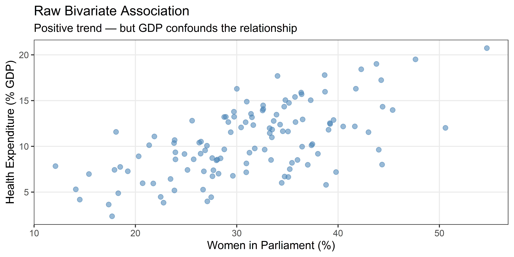
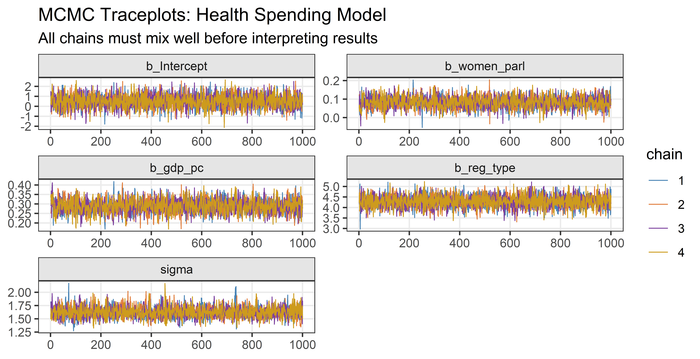
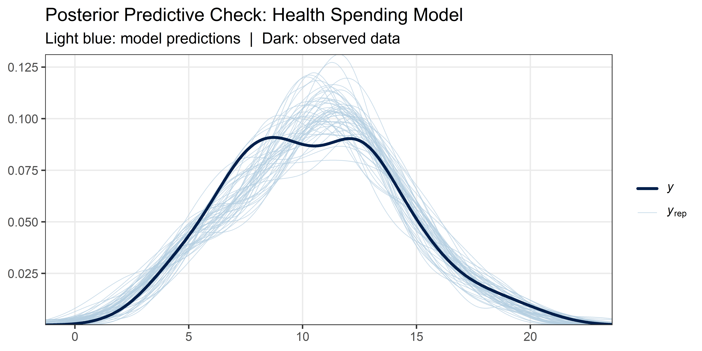
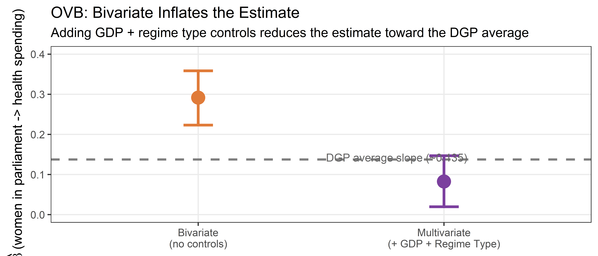

start_time <- Sys.time() # used to measure execution time at the end
library(tidyverse) # data manipulation and ggplot2
library(brms) # Bayesian regression via Stan
library(bayesplot) # MCMC diagnostic plots
library(patchwork) # composing multi-panel figures
# Shared colour palette — reused in every plot so figures look consistent
col_1 <- "steelblue"
col_2 <- "#E07B39"
col_3 <- "#7B3F9E"
col_4 <- "goldenrod3"
chain_cols <- c(col_1, col_2, col_3, col_4) # one colour per MCMC chainWeek 9 Lab: Multivariate Regression and Interactions
Applications from the lecture — work through the code and check that it runs
Setup
Before running any analysis, we load the packages we need and define a few shared colour constants that keep plots visually consistent. brms fits Bayesian regression models via Stan; bayesplot produces MCMC diagnostics; patchwork assembles multi-panel figures.
Part II: Application I — Multivariate brms Model
DAGs in Quarto: MermaidJS
One quick way to sketch a DAG directly in a Quarto document — no R package required. Use a fenced {mermaid} block with graph LR (left-to-right) or graph TD (top-down).
Code
graph LR
GDP["GDP per Capita"] --> WP["Women in Parliament (%)"]
GDP --> HS["Health Spending (% GDP)"]
WP --> HS
RT["Regime Type"] --> HSgraph LR GDP["GDP per Capita"] --> WP["Women in Parliament (%)"] GDP --> HS["Health Spending (% GDP)"] WP --> HS RT["Regime Type"] --> HS
Nodes take labels in ["quoted text"]; directed edges are -->. This is enough for a homework submission or a quick theoretical sketch.
DGP: Synthetic Data (Dataset 1)
This lab uses a single synthetic dataset throughout all four parts. Working with synthetic data is pedagogically powerful: we know the true parameter values, so we can verify whether our models recover them. This is something you can almost never do with real data — in practice the DGP is unobserved; we only see the outcomes, never the process that produced them.
The research question has two layers, addressed progressively:
- Parts I–II: Is the share of women in parliament associated with higher public health expenditure, adjusting for GDP per capita and regime type?
- Parts III–IV: Does this association differ between presidential and parliamentary systems?
The key complication in Part II is confounding: wealthier countries simultaneously have more women in parliament and spend more on health. Failing to account for GDP per capita will over-estimate the legislative representation association. In Part IV we add a second complication: the slope itself may differ across regime types — this is association heterogeneity, addressed via an interaction term.
Code
set.seed(2026) # reproducibility: same data every time
n <- 120 # 120 synthetic country-years
# ── Population-level parameters (the ground truth) ──────────────────────────
beta_0 <- 2 # intercept (presidential baseline)
beta_women_pres <- 0.08 # women_parl slope in presidential systems
beta_gdp <- 0.20 # GDP per capita partial association
beta_reg <- 1.5 # parliamentary intercept shift
beta_interact <- 0.10 # extra women_parl slope in parliamentary systems
sigma <- 1.5 # residual standard deviation
# ── Data-generating process ──────────────────────────────────────────────────
gdp_pc <- rnorm(n, mean = 18, sd = 7)
women_parl <- 15 + 0.9 * gdp_pc + rnorm(n, 0, 5)
reg_type <- rbinom(n, 1, prob = 0.55) # 1 = parliamentary, 0 = presidential
health_spend <- beta_0 +
beta_gdp * gdp_pc +
beta_women_pres * women_parl +
beta_reg * reg_type +
beta_interact * women_parl * reg_type + # steeper slope in parliamentary
rnorm(n, 0, sigma)
df <- tibble(gdp_pc, women_parl, reg_type, health_spend) |>
mutate(system = if_else(reg_type == 1, "Parliamentary", "Presidential"))
NoteAlternative implementation
# OLS check: verify OVB direction without brms
m_biv <- lm(health_spend ~ women_parl, data = df)
m_full <- lm(health_spend ~ women_parl + gdp_pc + reg_type, data = df)
round(coef(m_biv)["women_parl"] - coef(m_full)["women_parl"], 3)True women-in-parliament slopes:
| System | Slope |
|---|---|
Presidential (reg_type = 0) |
0.08 |
Parliamentary (reg_type = 1) |
0.08 + 0.10 = 0.18 |
Because GDP drives both variables, a bivariate model (no controls) will produce an estimate well above either true value — that excess is omitted variable bias (OVB). The additive multivariate model (Parts I–II) estimates an average slope across both system types; the interaction model (Parts III–IV) estimates separate slopes.
Step 1: Estimand
Before writing any code, we state precisely what we are trying to estimate. Drawing a DAG before analysis keeps this honest: the estimand follows from the causal graph, not from what the model happens to produce.
Our DAG (presented in the lecture) shows GDP per capita as a confounder — it has causal arrows into both women’s parliamentary representation and health spending. A confounder opens a “back-door path” that conflates the association we care about with the spurious GDP-driven correlation. Conditioning on GDP per capita — including it as a predictor — closes that path. Regime type (reg_type) enters as a dummy variable for the intercept shift (parliamentary systems may have a different baseline level of spending) and as the moderator in Part IV.
Estimand (Part II): the partial association between women’s parliamentary representation and public health expenditure, adjusting for GDP per capita and regime type — the average slope across both system types.
Adjusting for GDP per capita and regime type shifts the estimate toward the true DGP average. Whether the adjustment set is sufficient is a substantive question the data alone cannot answer.
Step 2: Data Summary
The scatter below shows the raw bivariate association between women’s parliamentary share and health spending. There is a positive trend, but it conflates the legislative association with the confounding from GDP. We will visualise the OVB explicitly in Step 7, after fitting both models.
Code
df |>
ggplot(aes(x = women_parl, y = health_spend)) +
geom_point(colour = col_1, alpha = 0.55, size = 2) +
theme_bw() +
theme(panel.grid.minor = element_blank()) +
labs(
x = "Women in Parliament (%)",
y = "Health Expenditure (% GDP)",
title = "Raw Bivariate Association",
subtitle = "Positive trend — but GDP confounds the relationship"
)
NoteAlternative implementation
df |>
ggplot(aes(x = women_parl, y = health_spend, colour = gdp_pc)) +
geom_point(size = 2, alpha = 0.7) +
scale_colour_gradient(low = col_1, high = col_2, name = "GDP pc") +
theme_bw() +
labs(title = "Confounding visible: GDP colours the point cloud",
x = "Women in Parliament (%)", y = "Health Expenditure (% GDP)")Step 3: Formal Model Specification
We write out the full statistical model — likelihood and priors — before touching brms. This makes our assumptions explicit and contestable.
Likelihood (unchanged from Week 8 — still Gaussian):
\[ Y_i \sim \text{Normal}(\mu_i,\, \sigma) \]
\[ \mu_i = \alpha + \beta_X X_i + \beta_Z Z_i + \beta_D D_i \]
where \(X\) = women in parliament (%), \(Z\) = GDP per capita (thousands USD, PPP), \(D\) = regime type (1 = parliamentary, 0 = presidential). The dummy \(D\) gives parliamentary systems a different intercept baseline.
Priors (one per unknown parameter — all five must be justified):
\[ \alpha \sim \text{Normal}(10, 5) \qquad \beta_X \sim \text{Normal}(0, 2) \]
\[ \beta_Z \sim \text{Normal}(0, 2) \qquad \beta_D \sim \text{Normal}(0, 2) \qquad \sigma \sim \text{Exponential}(1) \]
The prior on \(\beta_X\) says: before seeing data, a 1 pp increase in women’s representation is associated with a change of somewhere between −6 and +6 pp in health spending (the Normal(0, 2) range at ±3σ is [−6, +6]). The prior on \(\beta_D\) says: parliamentary systems may spend anywhere from about 6 pp less to 6 pp more than presidential systems, holding other predictors constant — a weakly informative, non-dogmatic prior with no assumption about which system spends more. Both are defensible weakly informative priors: broad enough to let the data speak, narrow enough to down-weight implausible extreme values.
Step 4: Prior Predictive Check
A prior predictive check asks: if we sample parameter values from the priors and generate data, do the simulated outcomes look like real-world health spending? Public health expenditure as a share of GDP is typically between 0% and 30%. Prior-predicted values far outside this range would signal that our priors are miscalibrated.
Code
set.seed(2026)
n_pp <- 2000
# For each of the 2000 draws, compute the linear predictor at every observation
# and add Gaussian noise with the drawn σ.
# rowwise() + mutate(y_sim = list(...)) creates one simulated dataset per draw.
prior_pred_controls <- tibble(
b0 = rnorm(n_pp, 10, 5), # intercept draws — Normal(10, 5)
b_wp = rnorm(n_pp, 0, 2), # women_parl slope draws — Normal(0, 2)
b_gdp = rnorm(n_pp, 0, 2), # gdp_pc slope draws — Normal(0, 2)
b_reg = rnorm(n_pp, 0, 2), # regime-type dummy draws — Normal(0, 2)
sigma = rexp(n_pp, 1) # residual SD draws — Exponential(1)
) |>
rowwise() |>
mutate(
y_sim = list(
b0 +
b_wp * df$women_parl +
b_gdp * df$gdp_pc +
b_reg * df$reg_type +
rnorm(nrow(df), 0, sigma)
)
) |>
unnest(y_sim) |>
ungroup()
prior_pred_controls |>
ggplot(aes(x = y_sim)) +
annotate(
"rect",
xmin = 0,
xmax = 30,
ymin = 0,
ymax = Inf,
fill = col_4,
alpha = 0.12
) +
geom_density(fill = col_1, alpha = 0.55, colour = "white", linewidth = 0.4) +
geom_vline(
xintercept = c(0, 30),
colour = col_4,
linetype = "dashed",
linewidth = 0.9
) +
annotate(
"text",
x = 15,
y = Inf,
vjust = 1.4,
size = 3.2,
colour = col_4,
label = "Plausible empirical range: 0–30% GDP"
) +
theme_bw() +
theme(panel.grid.minor = element_blank()) +
labs(
x = "Predicted Health Expenditure (% GDP)",
y = "Prior Predictive Density",
title = "Prior Predictive Check: Health Spending Model",
subtitle = "Before seeing data — does the prior generate plausible outcomes?"
)
NoteAlternative implementation
fit_prior_only <- brm(
health_spend ~ women_parl + gdp_pc + reg_type,
data = df,
prior = c(
prior(normal(10, 5), class = "Intercept"),
prior(normal(0, 2), class = "b"),
prior(exponential(1), class = "sigma")
),
sample_prior = "only",
chains = 2, iter = 1000, seed = 2026
)
pp_check(fit_prior_only, ndraws = 50)Step 5: Fit the Model with brms
The brm() call mirrors the formal model written in Step 3. Note that we specify a separate prior() for each coefficient using coef =. This is more precise than applying one flat prior to all slopes, and it documents our assumptions in the code itself.
brms translates the model to Stan (C++), compiles it, and samples 4 parallel Markov chains. With iter = 2000 and warmup = 1000, each chain contributes 1,000 post-warmup draws, giving 4,000 total posterior samples of \((\alpha, \beta_X, \beta_Z, \sigma)\).
We fit both the bivariate (no controls) and additive multivariate models here so we can compare their estimates and assess OVB in Step 7.
Code
# Bivariate model: health spending ~ women in parliament only
# This model omits GDP and regime type — will over-estimate the association (OVB)
fit_biv <- brm(
health_spend ~ women_parl,
data = df,
prior = c(
prior(normal(10, 5), class = "Intercept"), # baseline ~10% GDP
prior(normal(0, 2), class = "b"), # weakly informative prior
prior(exponential(1), class = "sigma") # residual SD < 5 almost certainly
),
chains = 4,
iter = 2000,
warmup = 1000,
seed = 2026
)
NoteAlternative implementation
# Inspect default prior structure before specifying your own
get_prior(
health_spend ~ women_parl,
data = df,
family = gaussian()
)Code
# Additive multivariate model: health spending ~ women + GDP + regime type
# Including GDP and regime type closes the back-door path and accounts for
# the intercept-level difference between system types
fit_multi <- brm(
health_spend ~ women_parl + gdp_pc + reg_type,
data = df,
prior = c(
prior(normal(10, 5), class = "Intercept"),
prior(normal(0, 2), class = "b", coef = "women_parl"), # weakly informative
prior(normal(0, 2), class = "b", coef = "gdp_pc"), # weakly informative
prior(normal(0, 2), class = "b", coef = "reg_type"), # parliamentary shift
prior(exponential(1), class = "sigma")
),
chains = 4,
iter = 2000,
warmup = 1000,
seed = 2026
)
NoteAlternative implementation
# Confirm the priors actually applied to the fitted model
prior_summary(fit_multi)Step 6a: MCMC Diagnostics — Traceplots
Before interpreting any results, we must confirm that MCMC has converged. Three things to check:
- Rhat < 1.01 for every parameter: the chains have mixed — all four explored the same region of parameter space.
- Bulk_ESS and Tail_ESS > 1,000 for every parameter: we have enough effective samples to trust posterior summaries and credible intervals.
- Traceplots look like “hairy caterpillars”: each chain wanders randomly around the same range with no trends, drifts, or stuck periods.
If any diagnostic fails, stop and investigate before interpreting results.
Code
mcmc_trace(
fit_multi,
pars = c("b_Intercept", "b_women_parl", "b_gdp_pc", "b_reg_type", "sigma"),
facet_args = list(ncol = 2)
) +
scale_colour_manual(values = chain_cols) +
theme_bw() +
theme(
panel.grid.minor = element_blank(),
strip.background = element_rect(fill = "gray90")
) +
labs(
title = "MCMC Traceplots: Health Spending Model",
subtitle = "All chains must mix well before interpreting results"
)
NoteAlternative implementation
mcmc_rank_hist(
fit_multi,
pars = c("b_Intercept", "b_women_parl", "b_gdp_pc", "b_reg_type", "sigma")
) +
labs(title = "Rank histograms: uniform bars confirm good mixing")Step 6b: Posterior Predictive Check
A posterior predictive check (PPC) asks: do the model’s predictions look like the observed data? pp_check() draws 50 samples from the posterior predictive distribution (light blue lines) and overlays them on the observed outcome distribution (dark blue line). A well-specified model should produce simulated outcome distributions that closely envelope the observed one.
Code
pp_check(fit_multi, ndraws = 50) +
theme_bw() +
theme(panel.grid.minor = element_blank()) +
labs(
title = "Posterior Predictive Check: Health Spending Model",
subtitle = "Light blue: model predictions | Dark: observed data"
)
NoteAlternative implementation
pp_check(fit_multi, type = "stat_2d", stat = c("mean", "sd")) +
labs(title = "Joint PPC: posterior mean and SD vs observed")Step 7: Interpret Results
summary() returns posterior means (Estimate), posterior standard deviations (Est.Error), and 95% credible intervals (l-95% CI / u-95% CI) for each parameter. The Rhat column confirms convergence (should be < 1.01 everywhere) and Bulk_ESS / Tail_ESS confirm adequate effective sample sizes.
Code
summary(fit_multi) Family: gaussian
Links: mu = identity
Formula: health_spend ~ women_parl + gdp_pc + reg_type
Data: df (Number of observations: 120)
Draws: 4 chains, each with iter = 2000; warmup = 1000; thin = 1;
total post-warmup draws = 4000
Regression Coefficients:
Estimate Est.Error l-95% CI u-95% CI Rhat Bulk_ESS Tail_ESS
Intercept 0.52 0.65 -0.79 1.81 1.00 3738 3383
women_parl 0.08 0.03 0.02 0.15 1.00 2455 2686
gdp_pc 0.29 0.04 0.22 0.36 1.00 2407 2421
reg_type 4.29 0.29 3.71 4.86 1.00 3740 2651
Further Distributional Parameters:
Estimate Est.Error l-95% CI u-95% CI Rhat Bulk_ESS Tail_ESS
sigma 1.62 0.11 1.42 1.85 1.00 3273 2555
Draws were sampled using sampling(NUTS). For each parameter, Bulk_ESS
and Tail_ESS are effective sample size measures, and Rhat is the potential
scale reduction factor on split chains (at convergence, Rhat = 1).
NoteAlternative implementation
as_draws_df(fit_multi) |>
select(b_women_parl, b_gdp_pc, b_reg_type, sigma) |>
summarise(across(
everything(),
list(mean = mean,
sd = sd,
q2.5 = \(x) quantile(x, 0.025),
q97.5 = \(x) quantile(x, 0.975))
))What to look for:
b_women_parlposterior mean should be near the DGP average across both system types (approximately 0.08 + 0.10 × mean(reg_type) ≈ 0.135, since the additive model averages over the interaction). Compare this to the bivariate estimate — the difference is the OVB from omitting GDP.b_gdp_pcposterior mean should be near 0.20.b_reg_typeposterior mean should be near 1.5 (parliamentary intercept shift).sigmashould be near 1.5.
OVB: Comparing Bivariate and Multivariate Estimates
We now compare the women_parl coefficient from both models. The bivariate estimate (no GDP control) is inflated by OVB; the multivariate estimate recovers a value close to the true DGP value of 0.12.
Code
post_biv <- posterior_summary(fit_biv)["b_women_parl", ]
post_multi <- posterior_summary(fit_multi)["b_women_parl", ]
coef_df <- tibble(
Model = factor(
c("Bivariate\n(no controls)", "Multivariate\n(+ GDP + Regime Type)"),
levels = c(
"Bivariate\n(no controls)",
"Multivariate\n(+ GDP + Regime Type)"
)
),
Estimate = c(post_biv["Estimate"], post_multi["Estimate"]),
lo = c(post_biv["Q2.5"], post_multi["Q2.5"]),
hi = c(post_biv["Q97.5"], post_multi["Q97.5"])
)
# DGP average slope: 0.08 + 0.10 * mean(reg_type) ≈ 0.135
dgp_avg <- 0.08 + 0.10 * mean(df$reg_type)
coef_df |>
ggplot(aes(x = Model, y = Estimate)) +
geom_hline(
yintercept = dgp_avg,
colour = "gray50",
linetype = "dashed",
linewidth = 0.9
) +
geom_errorbar(
aes(ymin = lo, ymax = hi, colour = Model),
width = 0.12,
linewidth = 1.1
) +
geom_point(aes(colour = Model), size = 5) +
scale_colour_manual(values = c(col_2, col_3), guide = "none") +
annotate(
"text",
x = 1.52,
y = dgp_avg + 0.005,
size = 3.3,
colour = "gray40",
label = "DGP average slope (~0.135)",
hjust = 0
) +
theme_bw() +
theme(panel.grid.minor = element_blank()) +
labs(
x = NULL,
y = expression(hat(beta) ~ "(women in parliament -> health spending)"),
title = "OVB: Bivariate Inflates the Estimate",
subtitle = "Adding GDP + regime type controls reduces the estimate toward the DGP average"
) +
scale_y_continuous(limits = c(0, 0.40))
NoteAlternative implementation
bind_rows(
as_draws_df(fit_biv) |>
transmute(b_women_parl, model = "Bivariate"),
as_draws_df(fit_multi) |>
transmute(b_women_parl, model = "Multivariate (+ GDP + Regime Type)")
) |>
ggplot(aes(x = b_women_parl, fill = model)) +
geom_density(alpha = 0.55) +
scale_fill_manual(values = c(col_2, col_3)) +
theme_bw() +
labs(title = "Full posterior densities: OVB as distributional shift",
x = expression(beta["women"]), fill = NULL)Visualising the Partial Effect
Rather than just reporting the coefficient, we visualise the estimated relationship. We create a prediction grid that varies women_parl across its observed range while holding gdp_pc fixed at its sample mean — this isolates the partial effect of legislative representation.
posterior_epred() returns a matrix of posterior draws of \(E[Y \mid X, Z]\) for each grid row. Taking quantiles across draws gives us the posterior mean and 95% credible interval for the partial effect at each value of women_parl.
Code
# Grid: vary women_parl, hold gdp_pc at mean, regime type at modal value (1 = parliamentary)
grid_controls <- tibble(
women_parl = seq(
min(df$women_parl),
max(df$women_parl),
length.out = 80
),
gdp_pc = mean(df$gdp_pc),
reg_type = 1L # evaluate partial effect for parliamentary systems
)
# posterior_epred returns a draws × grid matrix of E[Y | X, Z, D] values
epred_mat <- posterior_epred(fit_multi, newdata = grid_controls)
grid_controls <- grid_controls |>
mutate(
lo = apply(epred_mat, 2, quantile, 0.025), # 2.5th percentile across draws
mid = apply(epred_mat, 2, median), # median across draws
hi = apply(epred_mat, 2, quantile, 0.975) # 97.5th percentile across draws
)
df |>
ggplot(aes(x = women_parl, y = health_spend)) +
geom_ribbon(
data = grid_controls,
aes(x = women_parl, ymin = lo, ymax = hi, y = mid),
inherit.aes = FALSE,
fill = col_1,
alpha = 0.25
) +
geom_line(
data = grid_controls,
aes(x = women_parl, y = mid),
inherit.aes = FALSE,
colour = col_2,
linewidth = 1.2
) +
geom_point(colour = col_1, alpha = 0.45, size = 1.8) +
theme_bw() +
theme(panel.grid.minor = element_blank()) +
labs(
x = "Women in Parliament (%)",
y = "Health Expenditure (% GDP)",
title = "Partial Effect: Women in Parliament -> Health Spending",
subtitle = paste0(
"GDP per capita held at mean (",
round(mean(df$gdp_pc), 1),
" thousand USD) | Parliamentary systems | posterior_epred()"
)
)
NoteAlternative implementation
# brms built-in: partial effect marginalised over other predictors
plot(conditional_effects(fit_multi, effects = "women_parl"))Step 8: LOO-IC Model Comparison
Bayesian leave-one-out cross-validation (LOO-IC) estimates how well each model would predict new data — it penalises complexity implicitly. We compare the bivariate model (no GDP control) against the multivariate model.
add_criterion() appends the LOO estimate to each fitted model. loo_compare() ranks models by expected log predictive density (elpd): higher elpd = better predictive accuracy. When |elpd_diff| > 2 × se_diff, the evidence for the better model is substantial.
Code
fit_multi <- add_criterion(fit_multi, "loo")
fit_biv <- add_criterion(fit_biv, "loo")
loo_compare(fit_biv, fit_multi) elpd_diff se_diff
fit_multi 0.0 0.0
fit_biv -73.1 8.7
NoteAlternative implementation
# WAIC as alternative information criterion (same ranking expected)
fit_multi <- add_criterion(fit_multi, "waic")
fit_biv <- add_criterion(fit_biv, "waic")
loo_compare(fit_biv, fit_multi, criterion = "waic")The multivariate model should dominate: GDP and regime type both genuinely predict health spending, so including them improves out-of-sample accuracy.
Remaining limitations to keep in mind:
- GDP may not be the only confounder — country institutional quality, colonial history, and cultural factors might also drive both representation and spending.
- Country-year observations within the same country are likely correlated — a violation of the independence assumption (A5) that Week 12 addresses with multilevel models.
- Linearity is assumed: we should inspect residuals for non-linear patterns.
Part IV: Application II — Interaction brms Model
The Research Question Revisited
Parts I–II established that women’s parliamentary representation is associated with higher health spending, even after controlling for GDP per capita and regime type as an additive intercept shift. But the additive model assumes the slope of the women-in-parliament association is the same for both presidential and parliamentary systems.
Part IV relaxes this assumption:
Does the association between female legislator share and health spending vary by regime type?
Legislative composition theory: parliamentary systems concentrate budget authority in the legislature — strong party discipline, parliamentary sovereignty, budget processes rooted in the legislature. Presidential systems divide power across branches, potentially weakening the translation of legislative preferences into policy. This predicts a steeper slope for women in parliament in parliamentary systems.
We use the same df dataset as Parts I–II. The true DGP already encodes this interaction:
| System | Women-in-parliament slope |
|---|---|
Presidential (reg_type = 0) |
0.08 |
Parliamentary (reg_type = 1) |
0.08 + 0.10 = 0.18 |
The interaction coefficient \(\beta_3 = 0.10\) captures how much steeper the parliamentary slope is relative to the presidential slope.
Step 1: DAG and Estimand
The DAG (introduced in the lecture) shows regime type having a direct arrow into health spending (intercept shift, captured in Parts I–II) and a moderation role on the women-in-parliament → health-spending edge (the interaction, the focus of Part IV).
Because we already control for GDP per capita (the confounder), no additional adjustment is needed. The interaction term itself is the new quantity of interest.
Estimand 1: \(\partial\mu/\partial X \mid Z=0\) — women-in-parliament slope in presidential systems.
Estimand 2: \(\partial\mu/\partial X \mid Z=1\) — women-in-parliament slope in parliamentary systems.
Estimand 3: \(\beta_3\) — the slope difference; how much more does women’s representation associate with health spending in parliamentary vs. presidential systems?
Step 2: Data Summary
We start with the marginal distribution of health spending by system type, then examine the joint scatter with separate OLS lines per group and a tercile-based boxplot comparison.
Code
df |>
ggplot(aes(x = health_spend, fill = system, colour = system)) +
geom_density(alpha = 0.45, linewidth = 0.8) +
scale_fill_manual(
values = c("Parliamentary" = col_1, "Presidential" = col_2)
) +
scale_colour_manual(
values = c("Parliamentary" = col_1, "Presidential" = col_2)
) +
theme_bw() +
theme(panel.grid.minor = element_blank(), legend.position = "bottom") +
labs(
x = "Health Spending (% GDP)",
y = "Density",
title = "Distribution of Health Spending by Regime Type",
subtitle = "Parliamentary systems spend more on average",
fill = NULL,
colour = NULL
)
NoteAlternative implementation
df |>
ggplot(aes(x = system, y = health_spend, fill = system)) +
geom_violin(alpha = 0.6) +
geom_jitter(width = 0.1, alpha = 0.35, size = 1.2) +
scale_fill_manual(
values = c("Parliamentary" = col_1, "Presidential" = col_2), guide = "none"
) +
theme_bw() +
labs(title = "Health spending by regime type — violin view",
x = NULL, y = "Health Spending (% GDP)")The scatter below puts women in parliament on the x-axis and draws separate OLS lines for each system type. If the lines have visibly different slopes, that is preliminary evidence for an interaction. The boxplot facets women in parliament into terciles and shows whether the gap between systems widens with more female legislators — the visual signature of \(\beta_3 > 0\).
Code
p_scatter_int <- df |>
ggplot(aes(x = women_parl, y = health_spend, colour = system)) +
geom_point(alpha = 0.5, size = 1.8) +
geom_smooth(
aes(group = system),
method = "lm",
se = FALSE,
linewidth = 1.2
) +
scale_colour_manual(
values = c("Parliamentary" = col_1, "Presidential" = col_2),
name = "System"
) +
theme_bw() +
theme(panel.grid.minor = element_blank(), legend.position = "bottom") +
labs(
x = "Women in Parliament (%)",
y = "Health Spending (% GDP)",
title = "Separate Slopes by Regime Type",
subtitle = "OLS line per system"
)
df_interact_plot <- df |>
mutate(
wp_tercile = cut(
women_parl,
breaks = quantile(women_parl, c(0, 1 / 3, 2 / 3, 1)),
labels = c("Low\n(<25%)", "Mid\n(~33%)", "High\n(>40%)"),
include.lowest = TRUE
)
)
p_box_int <- df_interact_plot |>
ggplot(aes(x = wp_tercile, y = health_spend, fill = system)) +
geom_boxplot(
alpha = 0.7,
position = position_dodge(width = 0.75),
width = 0.6
) +
scale_fill_manual(
values = c("Parliamentary" = col_1, "Presidential" = col_2),
name = "System"
) +
theme_bw() +
theme(panel.grid.minor = element_blank(), legend.position = "bottom") +
labs(
x = "Women in Parliament Tercile",
y = "Health Spending (% GDP)",
title = "Gap Across Systems by Women-in-Parliament Level",
subtitle = "Widening gap = signature of a positive interaction"
)
p_scatter_int | p_box_int
NoteAlternative implementation
df |>
mutate(tercile = cut(women_parl,
breaks = quantile(women_parl, c(0, 1/3, 2/3, 1)),
labels = c("Low WP", "Mid WP", "High WP"),
include.lowest = TRUE)) |>
ggplot(aes(x = tercile, y = health_spend, fill = system)) +
geom_boxplot(position = position_dodge(0.75), alpha = 0.7) +
scale_fill_manual(values = c("Parliamentary" = col_1, "Presidential" = col_2)) +
theme_bw() +
labs(title = "Spending gap across systems — tercile view",
x = "Women in Parliament Tercile", y = "Health Spending (% GDP)", fill = NULL)Step 3: Formal Model Specification
The interaction model augments the additive model with a product term:
\[ Y_i \sim \text{Normal}(\mu_i,\, \sigma) \]
\[ \mu_i = \alpha + \beta_1 X_i + \beta_2 D_i + \beta_3 (X_i \cdot D_i) + \beta_Z Z_i \]
where \(X\) = women in parliament (%), \(D\) = regime type (1 = parliamentary), \(Z\) = GDP per capita.
The two conditional marginal effects are now functions of the moderator:
\[ \frac{\partial\mu}{\partial X} = \beta_1 + \beta_3 D \qquad \frac{\partial\mu}{\partial D} = \beta_2 + \beta_3 X \]
Priors:
\[ \alpha \sim \text{Normal}(10, 5) \qquad \beta_1, \beta_2, \beta_Z \sim \text{Normal}(0, 2) \qquad \beta_3 \sim \text{Normal}(0, 2) \qquad \sigma \sim \text{Exponential}(1) \]
The prior for \(\beta_3\) is centred at zero — our prior expectation is no moderation. The data will update this. This is appropriately humble: we should not encode strong prior beliefs about the direction of an interaction before seeing the evidence.
We fit two competing models:
fit_multi(no interaction): assumes the women-in-parliament slope is the same for all system types — a testable restriction (already fitted in Part II).fit_interact(interaction): relaxes this restriction. Iffit_interactfits substantially better via LOO-IC, we have evidence that the restriction is false.
Step 4: Prior Predictive Check
For the interaction model, we draw regression lines from the joint prior — one bundle per regime type. The check asks: does the prior allow a wide enough range of slope differences, including no moderation (parallel lines), strong moderation (strongly diverging lines), and implausible configurations?
Code
set.seed(2026)
n_pp2 <- 150
wp_seq <- seq(10, 55, length.out = 60)
gdp_mean <- mean(df$gdp_pc)
prior_lines_int <- tibble(
sim = 1:n_pp2,
b0 = rnorm(n_pp2, 10, 5), # intercept draws — Normal(10, 5)
b_wp = rnorm(n_pp2, 0, 2), # women_parl slope draws — Normal(0, 2)
b_reg = rnorm(n_pp2, 0, 2), # regime-type main effect draws — Normal(0, 2)
b_int = rnorm(n_pp2, 0, 2), # interaction term draws — Normal(0, 2)
b_gdp = rnorm(n_pp2, 0, 2) # GDP slope draws — Normal(0, 2)
) |>
expand_grid(women_parl = wp_seq, reg_type = c(0L, 1L)) |>
mutate(
y_hat = b0 +
b_wp * women_parl +
b_reg * reg_type +
b_int * women_parl * reg_type + # slope shifts by b_int in parliamentary
b_gdp * gdp_mean,
system = if_else(reg_type == 1, "Parliamentary", "Presidential")
)
prior_lines_int |>
ggplot(aes(
x = women_parl,
y = y_hat,
group = interaction(sim, system),
colour = system
)) +
geom_line(alpha = 0.12, linewidth = 0.5) +
scale_colour_manual(
values = c("Parliamentary" = col_1, "Presidential" = col_2),
name = "System"
) +
coord_cartesian(ylim = c(-5, 30)) +
theme_bw() +
theme(panel.grid.minor = element_blank(), legend.position = "bottom") +
labs(
x = "Women in Parliament (%)",
y = "Predicted Health Spending (% GDP)",
title = "Prior Predictive Spaghetti: Interaction Model",
subtitle = "150 lines per system — prior is non-dogmatic about moderation"
)
Step 5: Fit Both Models
We use the * operator in the brm() formula. women_parl * reg_type is shorthand for women_parl + reg_type + women_parl:reg_type. Always use *, not just the colon form (:). The colon-only form omits the main effects, which forces \(\beta_1 = 0\) and \(\beta_2 = 0\) — usually a false and arbitrary constraint.
fit_multi (the additive model, no interaction) was already fitted in Part II. We fit fit_interact here.
Code
# Interaction model — allows the women_parl slope to differ by regime type
# * expands to: women_parl + reg_type + women_parl:reg_type
fit_interact <- brm(
health_spend ~ women_parl * reg_type + gdp_pc,
data = df,
prior = c(
prior(normal(10, 5), class = "Intercept"),
prior(normal(0, 2), class = "b", coef = "women_parl"), # presidential slope
prior(normal(0, 2), class = "b", coef = "reg_type"), # parliamentary shift
prior(normal(0, 2), class = "b", coef = "gdp_pc"), # GDP partial effect
prior(normal(0, 2), class = "b", coef = "women_parl:reg_type"), # slope difference
prior(exponential(1), class = "sigma")
),
chains = 4,
iter = 2000,
warmup = 1000,
seed = 2026
)
NoteAlternative implementation
# Confirm priors actually applied to the interaction model
prior_summary(fit_interact)Step 6: Diagnostics and Posterior Predictive Check
We run the same convergence checks as before. The traceplots and PPC are shown side-by-side for the interaction model.
Code
p_trace_int <- mcmc_trace(
fit_interact,
pars = c(
"b_Intercept",
"b_women_parl",
"b_reg_type",
"b_women_parl:reg_type",
"b_gdp_pc"
),
facet_args = list(ncol = 2)
) +
scale_colour_manual(values = chain_cols) +
theme_bw() +
theme(
panel.grid.minor = element_blank(),
strip.background = element_rect(fill = "gray90"),
legend.position = "none"
) +
labs(title = "Traceplots: Interaction Model")
p_ppc_int <- pp_check(fit_interact, ndraws = 50) +
theme_bw() +
theme(panel.grid.minor = element_blank()) +
labs(title = "Posterior Predictive Check")
p_trace_int | p_ppc_int
NoteAlternative implementation
mcmc_rank_hist(
fit_interact,
pars = c("b_Intercept", "b_women_parl",
"b_reg_type", "b_women_parl:reg_type", "b_gdp_pc")
) +
labs(title = "Rank histograms: interaction model convergence check")Step 7: Interpreting Results and Posterior Marginal Effects
Inspect the summary output. The key quantity is b_women_parl:reg_type — the interaction coefficient \(\beta_3\). Its posterior mean should be near 0.10 (the true DGP value).
Code
summary(fit_interact) Family: gaussian
Links: mu = identity
Formula: health_spend ~ women_parl * reg_type + gdp_pc
Data: df (Number of observations: 120)
Draws: 4 chains, each with iter = 2000; warmup = 1000; thin = 1;
total post-warmup draws = 4000
Regression Coefficients:
Estimate Est.Error l-95% CI u-95% CI Rhat Bulk_ESS Tail_ESS
Intercept 2.35 0.78 0.82 3.87 1.00 2942 2755
women_parl 0.03 0.03 -0.03 0.10 1.00 2560 1970
reg_type 0.74 1.01 -1.21 2.69 1.00 2228 2178
gdp_pc 0.28 0.03 0.21 0.34 1.00 2576 2050
women_parl:reg_type 0.12 0.03 0.06 0.18 1.00 2140 2041
Further Distributional Parameters:
Estimate Est.Error l-95% CI u-95% CI Rhat Bulk_ESS Tail_ESS
sigma 1.57 0.10 1.38 1.78 1.00 3535 2644
Draws were sampled using sampling(NUTS). For each parameter, Bulk_ESS
and Tail_ESS are effective sample size measures, and Rhat is the potential
scale reduction factor on split chains (at convergence, Rhat = 1).
NoteAlternative implementation
as_draws_df(fit_interact) |>
mutate(
slope_presidential = b_women_parl,
slope_parliamentary = b_women_parl + `b_women_parl:reg_type`
) |>
summarise(across(
c(slope_presidential, slope_parliamentary),
list(mean = mean,
q2.5 = \(x) quantile(x, 0.025),
q97.5 = \(x) quantile(x, 0.975))
))Posterior Line Clouds
For each MCMC draw we compute the intercept and slope for each system type by simple arithmetic and draw the resulting line. The bundle of parliamentary lines (blue) should be steeper than the presidential bundle (orange).
Code
set.seed(2026)
post_draws_int <- as_draws_df(fit_interact) |> slice_sample(n = 200)
gdp_mean <- mean(df$gdp_pc)
df |>
ggplot(aes(x = women_parl, y = health_spend, colour = system)) +
# Presidential lines: intercept = b_Intercept + b_gdp_pc * gdp_mean,
# slope = b_women_parl
geom_abline(
data = post_draws_int,
aes(
intercept = b_Intercept + b_gdp_pc * gdp_mean,
slope = b_women_parl
),
colour = col_2,
alpha = 0.05,
linewidth = 0.4
) +
# Parliamentary lines: intercept = b_Intercept + b_reg_type + b_gdp_pc * gdp_mean,
# slope = b_women_parl + b_women_parl:reg_type
geom_abline(
data = post_draws_int,
aes(
intercept = b_Intercept + b_reg_type + b_gdp_pc * gdp_mean,
slope = b_women_parl + `b_women_parl:reg_type`
),
colour = col_1,
alpha = 0.05,
linewidth = 0.4
) +
geom_point(alpha = 0.5, size = 1.8) +
scale_colour_manual(
values = c("Parliamentary" = col_1, "Presidential" = col_2),
name = "System"
) +
theme_bw() +
theme(panel.grid.minor = element_blank(), legend.position = "bottom") +
labs(
x = "Women in Parliament (%)",
y = "Health Spending (% GDP)",
title = "Posterior Line Clouds by Regime Type",
subtitle = "200 MCMC draws per group — blue bundle (parliamentary) is steeper"
)
NoteAlternative implementation
# brms built-in: automatic interaction plot
plot(conditional_effects(
fit_interact,
effects = "women_parl:reg_type"
))Posterior Conditional Marginal Effects
The conditional marginal effect of women in parliament for a given system type is a function of \(\beta_1\) and \(\beta_3\):
\[ \text{ME}_{\text{presidential}} = \beta_1 \qquad \text{ME}_{\text{parliamentary}} = \beta_1 + \beta_3 \]
Because we have full posterior draws of both \(\beta_1\) and \(\beta_3\), we compute these by arithmetic — no approximation or delta method needed.
Code
post_all_int <- as_draws_df(fit_interact)
me_df <- post_all_int |>
transmute(
`Presidential` = b_women_parl, # ME at D = 0
`Parliamentary` = b_women_parl + `b_women_parl:reg_type` # ME at D = 1
) |>
pivot_longer(
everything(),
names_to = "system",
values_to = "marginal_effect"
) |>
mutate(
system = factor(system, levels = c("Presidential", "Parliamentary"))
)
# P(β₃ > 0 | data): direct posterior probability — not a p-value
prob_b3_pos <- mean(post_all_int$`b_women_parl:reg_type` > 0)
me_df |>
ggplot(aes(x = marginal_effect, fill = system, colour = system)) +
geom_density(alpha = 0.55, linewidth = 0.8) +
geom_vline(
xintercept = 0,
colour = "gray40",
linetype = "dotted",
linewidth = 0.9
) +
scale_fill_manual(
values = c("Presidential" = col_2, "Parliamentary" = col_1),
name = NULL
) +
scale_colour_manual(
values = c("Presidential" = col_2, "Parliamentary" = col_1),
name = NULL
) +
annotate(
"text",
x = max(me_df$marginal_effect) * 0.7,
y = Inf,
vjust = 1.5,
size = 3.5,
colour = col_3,
label = paste0("P(\u03b2\u2083 > 0 | data) = ", round(prob_b3_pos, 3))
) +
theme_bw() +
theme(panel.grid.minor = element_blank(), legend.position = "bottom") +
labs(
x = expression(partialdiff * mu / partialdiff ~ "Women in Parliament (%)"),
y = "Posterior Density",
title = "Posterior Marginal Effects: Women in Parliament -> Health Spending",
subtitle = "Parliamentary slope ~0.18 | Presidential slope ~0.08 | Exact by arithmetic"
)
NoteAlternative implementation
# Direct posterior summary of the interaction term
as_draws_df(fit_interact) |>
summarise(
mean_b3 = mean(`b_women_parl:reg_type`),
q2.5 = quantile(`b_women_parl:reg_type`, 0.025),
q97.5 = quantile(`b_women_parl:reg_type`, 0.975),
prob_pos = mean(`b_women_parl:reg_type` > 0)
)Reading the figure: the two density curves should be separated. P(β₃ > 0 | data) near 1.0 means we are nearly certain the interaction is positive — parliamentary systems show a steeper women-in-parliament–health-spending association. This is a direct posterior probability statement, not a p-value.
Step 8: LOO-IC Model Comparison
We compare fit_multi (no interaction) against fit_interact (interaction) using LOO-IC. Because we generated the data with an interaction, fit_interact should dominate fit_multi.
Code
fit_multi <- add_criterion(fit_multi, "loo")
fit_interact <- add_criterion(fit_interact, "loo")
loo_compare(fit_multi, fit_interact) elpd_diff se_diff
fit_interact 0.0 0.0
fit_multi -4.1 2.9
NoteAlternative implementation
# WAIC as alternative to LOO-IC — should rank models identically
fit_multi <- add_criterion(fit_multi, "waic")
fit_interact <- add_criterion(fit_interact, "waic")
loo_compare(fit_multi, fit_interact, criterion = "waic")Reading the output:
- The model listed first has the highest elpd — it is the better predictive model.
elpd_diff= 0 for the winner; all other models show a negative difference (i.e., they predict worse).- When
|elpd_diff| > 2 × se_diff, the evidence strongly favours the winner.
Remaining limitations:
- The linear interaction assumes the slope difference is constant across all values of women in parliament — check with a LOESS diagnostic if needed.
- Country-year observations within the same country are correlated (assumption A5) — a multilevel structure (Week 12) would handle this.
- Omitted confounders (institutional quality, colonial history, cultural factors) may bias the women-in-parliament coefficient.
Session Info and Execution Time
Code
sessionInfo()R version 4.5.2 (2025-10-31 ucrt)
Platform: x86_64-w64-mingw32/x64
Running under: Windows 11 x64 (build 26200)
Matrix products: default
LAPACK version 3.12.1
locale:
[1] LC_COLLATE=English_United States.utf8
[2] LC_CTYPE=English_United States.utf8
[3] LC_MONETARY=English_United States.utf8
[4] LC_NUMERIC=C
[5] LC_TIME=English_United States.utf8
time zone: Europe/Berlin
tzcode source: internal
attached base packages:
[1] stats graphics grDevices utils datasets methods base
other attached packages:
[1] patchwork_1.3.2 bayesplot_1.15.0 brms_2.23.0 Rcpp_1.1.1
[5] lubridate_1.9.4 forcats_1.0.1 stringr_1.6.0 dplyr_1.1.4
[9] purrr_1.2.1 readr_2.1.6 tidyr_1.3.2 tibble_3.3.1
[13] ggplot2_4.0.1 tidyverse_2.0.0
loaded via a namespace (and not attached):
[1] gtable_0.3.6 tensorA_0.36.2.1 QuickJSR_1.8.1
[4] xfun_0.55 htmlwidgets_1.6.4 processx_3.8.6
[7] inline_0.3.21 lattice_0.22-7 callr_3.7.6
[10] tzdb_0.5.0 ps_1.9.1 vctrs_0.6.5
[13] tools_4.5.2 generics_0.1.4 curl_7.0.0
[16] stats4_4.5.2 parallel_4.5.2 pkgconfig_2.0.3
[19] Matrix_1.7-4 checkmate_2.3.3 RColorBrewer_1.1-3
[22] S7_0.2.1 distributional_0.6.0 RcppParallel_5.1.11-1
[25] lifecycle_1.0.5 compiler_4.5.2 farver_2.1.2
[28] Brobdingnag_1.2-9 codetools_0.2-20 htmltools_0.5.9
[31] yaml_2.3.12 pillar_1.11.1 StanHeaders_2.32.10
[34] bridgesampling_1.2-1 abind_1.4-8 nlme_3.1-168
[37] posterior_1.6.1 rstan_2.32.7 tidyselect_1.2.1
[40] digest_0.6.39 mvtnorm_1.3-3 stringi_1.8.7
[43] reshape2_1.4.5 splines_4.5.2 labeling_0.4.3
[46] fastmap_1.2.0 grid_4.5.2 cli_3.6.5
[49] magrittr_2.0.4 loo_2.9.0 pkgbuild_1.4.8
[52] withr_3.0.2 scales_1.4.0 backports_1.5.0
[55] timechange_0.3.0 estimability_1.5.1 rmarkdown_2.30
[58] matrixStats_1.5.0 emmeans_2.0.1 otel_0.2.0
[61] gridExtra_2.3 hms_1.1.4 coda_0.19-4.1
[64] evaluate_1.0.5 knitr_1.51 V8_8.0.1
[67] mgcv_1.9-4 rstantools_2.6.0 rlang_1.1.7
[70] xtable_1.8-4 glue_1.8.0 jsonlite_2.0.0
[73] plyr_1.8.9 R6_2.6.1 Code
end_time <- Sys.time()
cat(
"Total execution time:",
round(difftime(end_time, start_time, units = "mins"), 1),
"minutes\n"
)Total execution time: 4.3 minutes